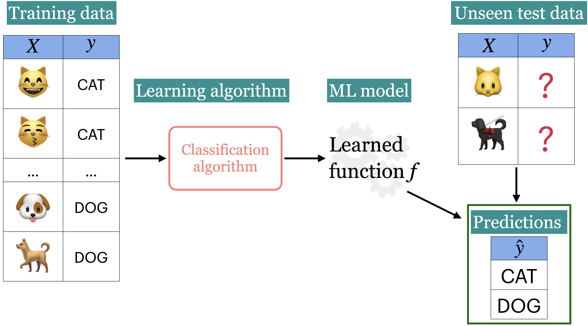

CPSC 330 Lecture 15: K-Means
Announcements
- HW5 extension: New due date is tomorrow.
- HW6 will be released today. It’ll be due next week Wednesday.
Pause and Reflect
We are now just over half-way through CPSC 330!
You had a midterm already a couple of weeks ago, I’d like some feedback on how things are going in class (as the instructor).
Class Survey
I’d love to hear how you think lectures are going, and how the course is going overall: bit.ly/cpsc330_24W1.
(iClicker) Midterm poll
Select all of the following statements which are TRUE.
- I’m happy with my progress and learning in this course.
- I find the course content interesting, but the pace is a bit overwhelming. Balancing this course with other responsibilities is challenging
- I’m doing okay, but I feel stressed and worried about upcoming assessments.
- I’m confused about some concepts and would appreciate more clarification or review sessions.
- I’m struggling to keep up with the material. I am not happy with my learning in this course and my morale is low ☹️.
Supervised learning
- Training data comprises a set of observations (X) and their corresponding targets (y).
- We wish to find a model function f that relates X to y.
- Then use that model function to predict the targets of new examples.
- We have been working with this set up so far.

Unsupervised learning
- Training data consists of observations (X) without any corresponding targets.
- Unsupervised learning could be used to group similar things together in X or to find underlying structure in the data.

Clustering Activity

- Categorize the food items in the image and write your categories. Do you think there is one correct way to cluster these images? Why or why not?
- If you want to build a machine learning model to cluster such images how would you represent such images?
The “perfect” spaghetti sauce
Suppose you are a hypothetical spaghetti sauce company and you’re asked to create the “perfect” spaghetti sauce which makes all your customers happy. The truth is humans are diverse and there is no “perfect” spaghetti sauce. There are “perfect” spaghetti sauces that cater to different tastes!
The “perfect” spaghetti sauce
Howard Moskowitz found out that Americans fall into one of the following three categories:
- people who like their spaghetti sauce plain
- people who like their spaghetti sauce spicy
- people who like their spaghetti sauce extra chunky
 Reference: Malcolm Gladwell’s Ted talk
Reference: Malcolm Gladwell’s Ted talk
The “perfect” spaghetti sauce
- If one “perfect” authentic sauce satisfies 60%, of the people on average, creating several tailored sauce clusters could increase average happiness to between 75% to 78%.
- Can we apply this concept of clustering and tailoring solutions to specific groups in machine learning?
K-means Clustering
- Algorithm Steps:
- Select K initial centroids.
- Assign each data point to the nearest centroid.
- Recalculate centroids based on assigned points.
- Repeat until centroids stabilize or reach a maximum number of iterations.
K-Means pros and cons
- Advantages:
- Simple and efficient for large datasets.
- Works well with spherical clusters.
- Limitations:
- Needs pre-defined K.
- Sensitive to outliers and initial centroid placement.
iClicker Exercise 15.1
Select all of the following statements which are True
- K-Means algorithm always converges to the same solution.
- K in K-Means should always be ≤ # of features.
- In K-Means, it makes sense to have K ≤ # of examples.
- In K-Means, in some iterations some points may be left unassigned.
iClicker Exercise 15.2
Select all of the following statements which are True
- K-Means is sensitive to initialization and the solution may change depending upon the initialization.
- K-means terminates when the number of clusters does not increase between iterations.
- K-means terminates when the centroid locations do not change between iterations.
- K-Means is guaranteed to find the optimal solution.
The Elbow Method
- Purpose: Identify the optimal number of clusters (K).
- How it Works:
- Plot intra-cluster distances for different values of K.
- Look for the “elbow” point where the intra-cluster reduction slows.
- Interpretation:
- The point of diminishing returns suggests a good K.
The Silhouette method
- Silhouette Score: Measures how well data points fit within their cluster.
- $s(i) = \frac{b(i) - a(i)}{\max (a(i), b(i))}$
- a(i): Mean distance to other points in the same cluster.
- b(i): Mean distance to points in the nearest neighboring cluster.
The Silhouette method
- Range: -1 to 1
- 1: Perfect clustering.
- 0: Overlapping clusters.
- Negative: Poor clustering.
- Higher average silhouette score indicates “better” clustering.
iClicker Exercise 15.3
Select all of the following statements which are True
- If you train K-Means with
n_clusters= the number of examples, the inertia value will be 0.
- The elbow plot shows the tradeoff between within cluster distance and the number of clusters.
- Unlike the Elbow method, the Silhouette method is not dependent on the notion of cluster centers.
- The elbow plot is not a reliable method to obtain the optimal number of clusters in all cases.
- The Silhouette scores ranges between -1 and 1 where higher scores indicates better cluster assignments.
s


 Reference: Malcolm Gladwell’s Ted talk
Reference: Malcolm Gladwell’s Ted talk